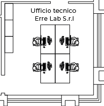

<map name="image_map">
  <area alt="" title="1" href="/Workstation" coords="81,47 110,47 110,106 82,106 81,89 66,89 66,75 81,74 " shape="polygon" (click)="setWorkstationInSession('uff_errelab_1f', 1)">
  <area alt="" title="2" href="/Workstation" coords="111,47 140,48 140,73 159,74 159,89 140,89 140,106 111,106 " shape="polygon" (click)="setWorkstationInSession('uff_errelab_1f', 2)">
  <area alt="" title="3" href="/Workstation" coords="81,166 81,141 66,141 66,126 81,126 82,106 111,107 111,165 " shape="polygon" (click)="setWorkstationInSession('uff_errelab_1f', 3)">
  <area alt="" title="4" href="/Workstation" coords="140,166 141,141 159,142 159,126 141,126 141,107 111,107 111,166 " shape="polygon" (click)="setWorkstationInSession('uff_errelab_1f', 4)">
</map>